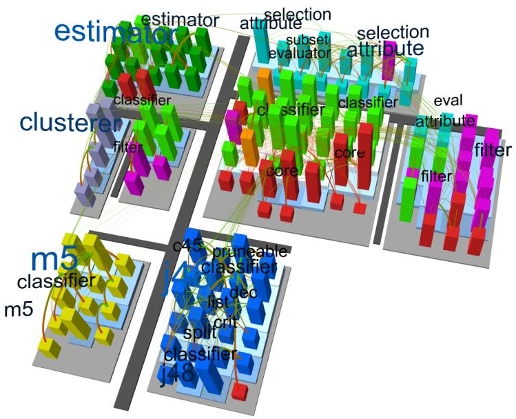
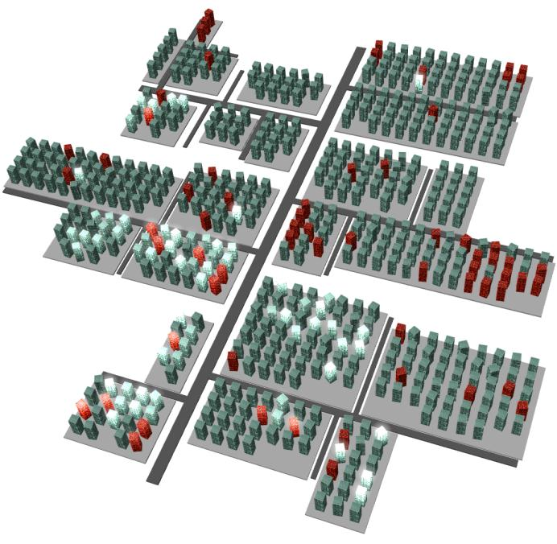
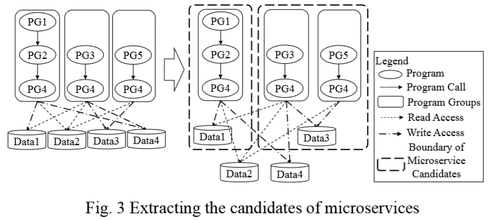

論文紹介:
"Microservice候補の自動抽出"
(他2本)
新山 祐介
2018年12月25日
https://euske.github.io/
ソフトウェア工学研究における2つの柱
プログラムのふるまいを理解する
(主なアプローチ: 動的解析)
プログラマー (の意図) を理解する
(主なアプローチ: 静的解析)
a と b が一致しているとき、 そのソフトウェアはベストな状態といえる。
紹介する論文
基本的に同じグループ (富士通研) の人々による一連の研究。
Kobayashi, et al. "
Feature-Gathering Dependency-Based Software Clustering Using Dedication and Modularity
" (ICSM 2012)
Kobayashi, et al. "
SArF Map: Visualizing Software Architecture from Feature and Layer Viewpoints
" (ICPC 2013)
Kamimura, et al. "Extracting Candidates of Microservices from Monolithic Application Code" (APSEC 2018)
論文1: SArF Clustering
Software clustering = 大量のソースコードを意味的なまとまりのある「クラスタ」に分割する。 (できれば全自動で)
コード中の要素 (識別子、AST) またはトレース情報を 素性ベクトルに変換し、クラスタリングをおこなう。
従来方式の欠点:
手動でパラメータ調整が必要であった (全自動でなかった)。
ユーティリティ的なコード (全域で使われる) がノイズになっていた。
本論文の貢献: よりよりクラスタリング手法を開発した。
SArF (Software Architecture Finder) の特徴
クラス間の依存情報を使う:
メソッド呼び出し
フィールドアクセス
他クラスからの継承
他クラスの参照
class 間の依存情報のみを使う:
Dedication Score = あるクラスが 別のクラスと共通している可能性。
クラスAがBに依存しているとき (A→B)、 このクラス間の Dedication Score を D
A→B
= 1 / (Bへの流入数) とする。
凝集度 (cohesion) みたいなもん?
類似度とも似ているが、方向性がある。
依存関係を使うことにより、 共通して利用されているモジュール群を分離できる。
得られたエッジの集合を、Modularity Maximization という 方法でクラスタリングする。
評価方法
自動で分類したクラスタと、 人手で分類したクラスタを比較する。
Weka, Javaassist, Ant などのソフトウェアを クラスタリングした結果、従来手法よりもよい精度を得た。
論文2: SArF Map
論文1 の技術の応用。
ソフトウェアの構造を都市として 表すというアイデアは古くからある…らしい (
CodeCity
, 2007).

SArF Map の特徴:
全自動かつ言語非依存で、dependency graph さえあれば作れる。
1つの建物 = 1つのクラス。
1つの機能 (クラスタ) = 1つのブロック
上のレイヤーほど上に表示される。
機能間の関連性 = 街路の距離
保守しにくいクラスは乱れたビルで表現される。
よく実行されるクラスは明るい色で表現される。
最近変更されたクラスは工事中のビルで表現される。

生成手法:
Jarファイル解析。
SArFクラスタリングを実行。
各クラスを2次元ブロックとしてレイアウト。
街路をレイアウト。
付加情報をオーバレイ(色など)として追加。
2次元レイアウト
次の関数を最小化するように各建物の X座標を決定する。
f(x
i
| i) = ∑
j∈ins(i)
(d
ji
(x
i
- x
j
))
2
+ ∑
j∈outs(i)
(d
ij
(x
i
- x
j
))
2
(d(i,j) は Dedication Score)
評価方法
RQ1: SArF Map は機能を可視化できるか? - yes.
RQ2: SArF Map はレイヤーを可視化できるか? - yes.
RQ3: SArF Map でデザインの質を見積れるか? - yes.
RQ4: SArF Map でアークテクチャが理解できるか? - yes.
RQ5: SArF Map は異なるステークホルダの間で一貫した見方を提供できるか? - yes. (保守担当者向けと経営者向けの 2種類のマップを生成)
論文3: Microservicesの検出
Microservice = 独立に開発・展開可能なモジュール。
モノリシックな巨大アプリを microservices に 分割しようという試みが活発。しかし人手で分析するのは困難。
基本的な戦略
各モジュールの API となる部分を発見する。
依存関係が少ないモジュール (クラスタ) を microservice の候補とする。
複数のモジュールから依存されている共通部分は各 microservice で複製する。
ただしデータベースは原子性が失われるので複製しない。

プログラム解析
JavaおよびCOBOLを静的解析。
(計装すると動作が変わってしまう場合があるため)
メソッド名およびJavaアノテーションを使って、 プログラム(メソッド)-プログラム間、および プログラム-データ間の依存関係を抽出。
CFGをたどり、データアクセスに到達するまで続ける。
Elements
Java
COBOL
API
@Control
メインプログラム
Data
@Entry
/
@Table
DBファイル
Program calls
メソッド呼び出し
CALL文
Write
メソッド名
set〜
テーブル作成および更新
Read
メソッド名
get〜
File参照のTable文
評価方法
2つのアプリケーションに対して適用:
Spring Boot Pet Clinic (Java, 630 loc, 25 classes)
自社開発アプリ (COBOL, 2031 kloc, 2269 files)
開発者が人手で評価する:
抽出された microservice 候補が機能的な単位と一致しているか?
抽出された microservice 候補が独立している (loosely coupled) か?
読んだ感想
アプローチは興味深かったが、 あまり具体的なことが書かれておらず 得るものが少なかった。
評価が yes/no question で さらに主観的である。(いいのか?)